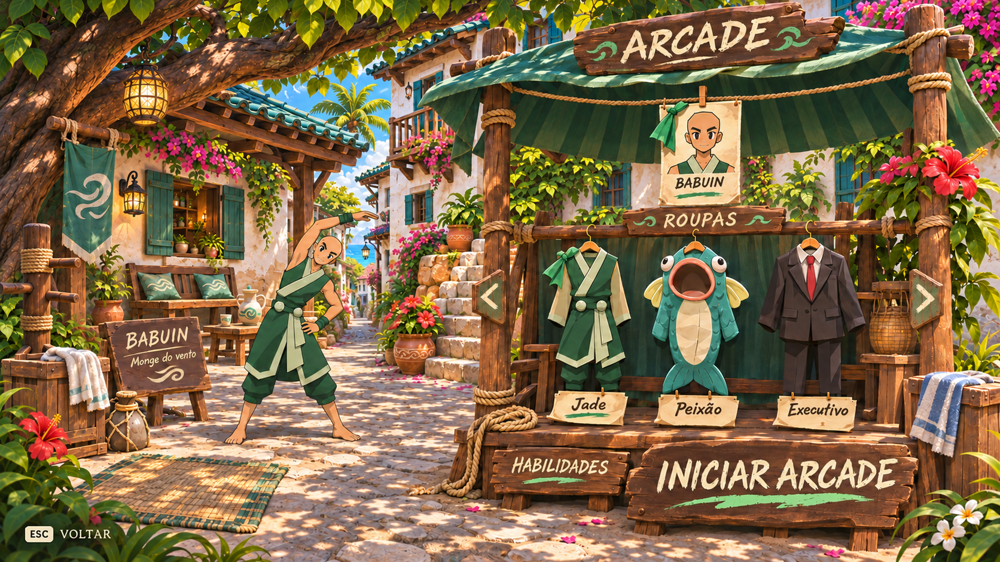
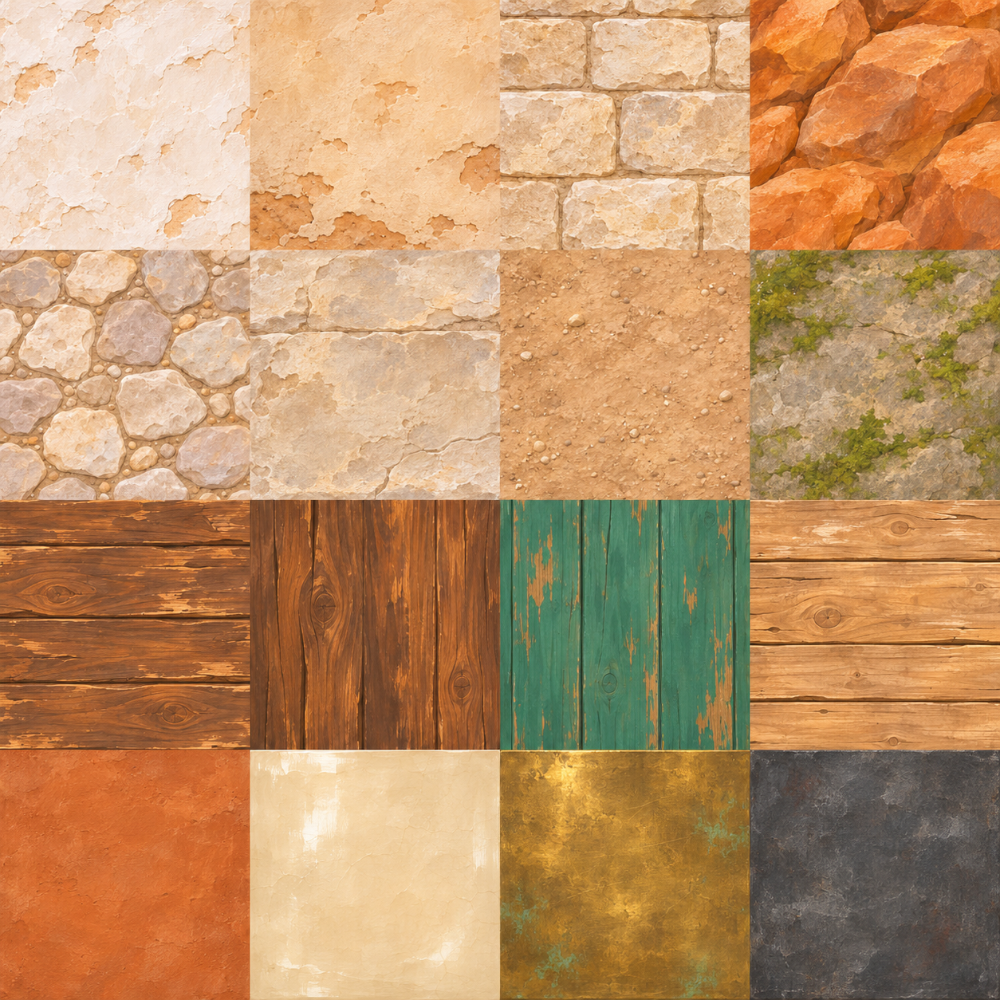
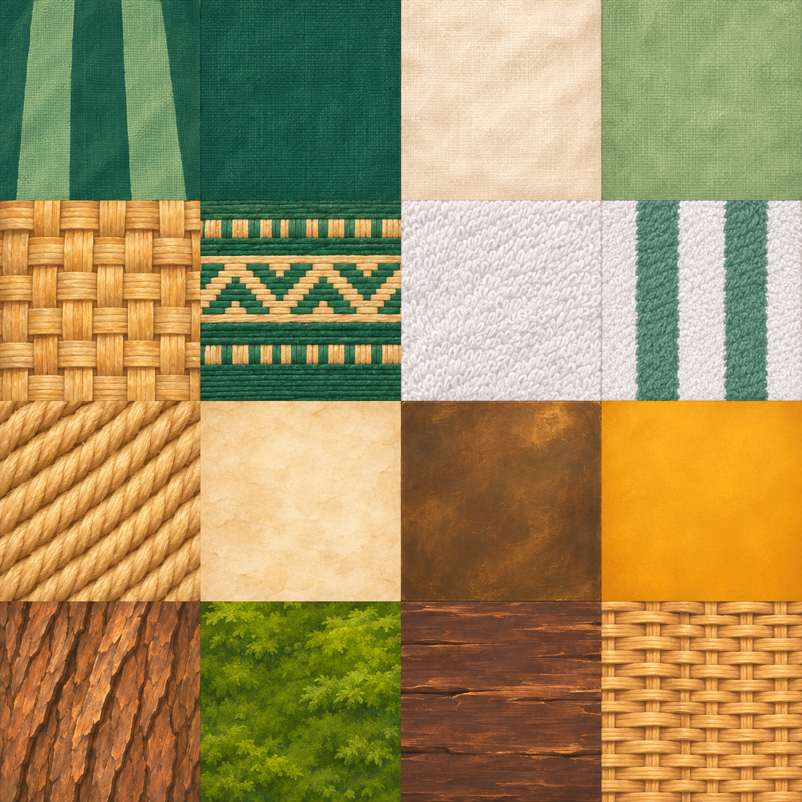
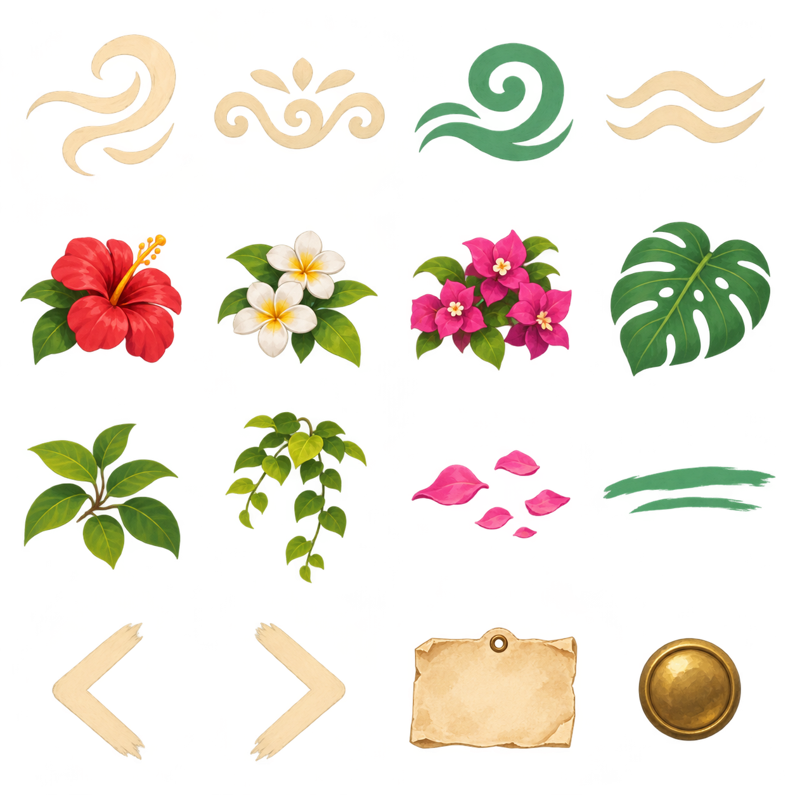
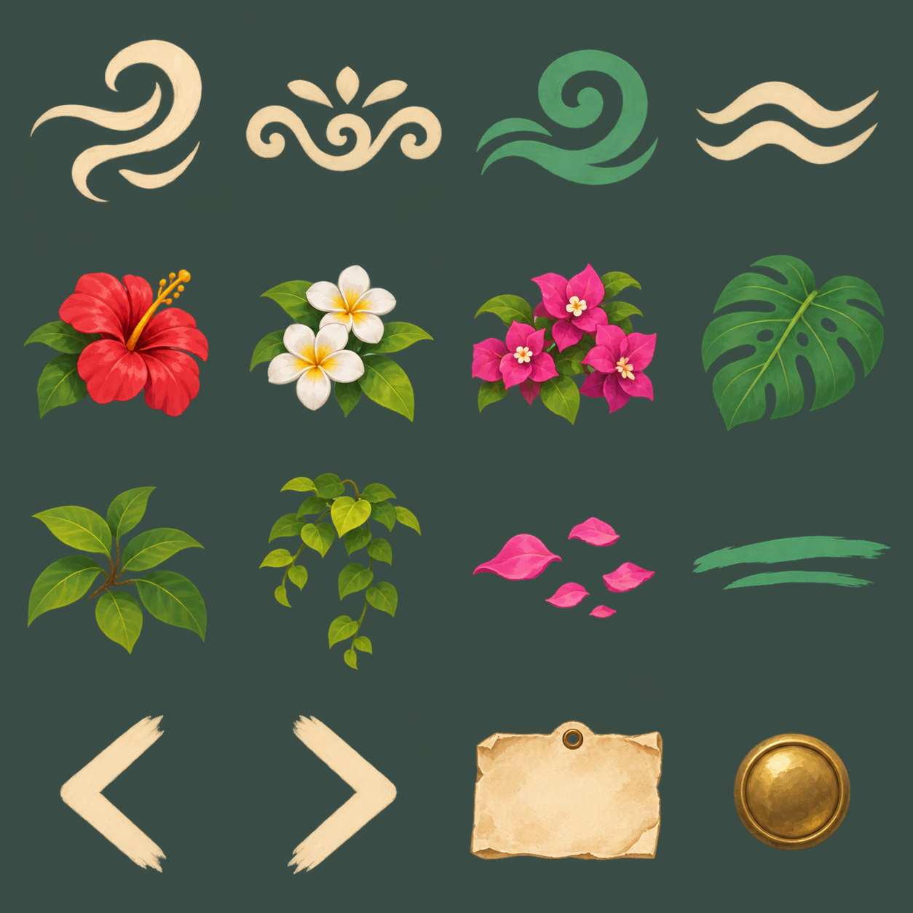

← Galeria de UIPátio das casas
Somente Babuin na ficha. Stand, descanso e materiais do cenário; telhados excluídos.

Baixar pacote completo · Mapa das 48 regiões · LEIA-ME
casas pedras madeiras

- reboco branco
- reboco envelhecido
- alvenaria calcario
- pedra laranja
- calcamento pedras
- pedra degraus
- terra arenosa
- pedra musgo
- madeira stand mobiliario
- madeira vigas postes
- madeira persianas jade
- madeira clara caixas
- terracota vasos
- ceramica marfim
- latao lanternas
- ferro suportes
Baixar PNGtecidos acessorios

- lona jade stand
- tecido estandarte
- almofada marfim
- almofada salvia
- tapete palha
- tapete trama verde
- toalha branca
- toalha listrada
- corda
- papel etiquetas
- bronze grade lanterna
- vidro ambar lanterna
- casca arvore
- musgo
- madeira placas
- vime cesto
Baixar PNGrecortes ornamentos

- emblema vento marfim
- ornamento vaso marfim
- ornamento ceramica jade
- motivo ondas almofada
- hibisco
- flores brancas
- bougainvillea
- monstera
- ramo folhas
- cipo
- petalas caidas
- sublinhado jade
- seta esquerda
- seta direita
- etiqueta vazia
- pino latao
Baixar PNGInspeção de transparência
